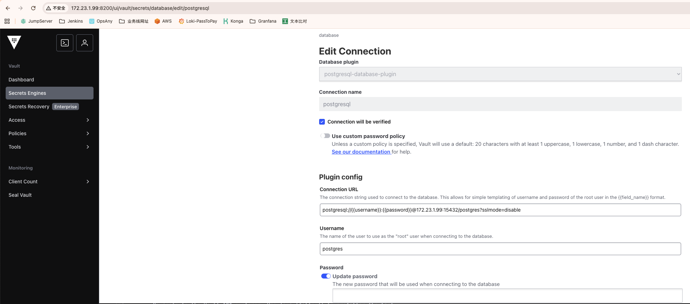
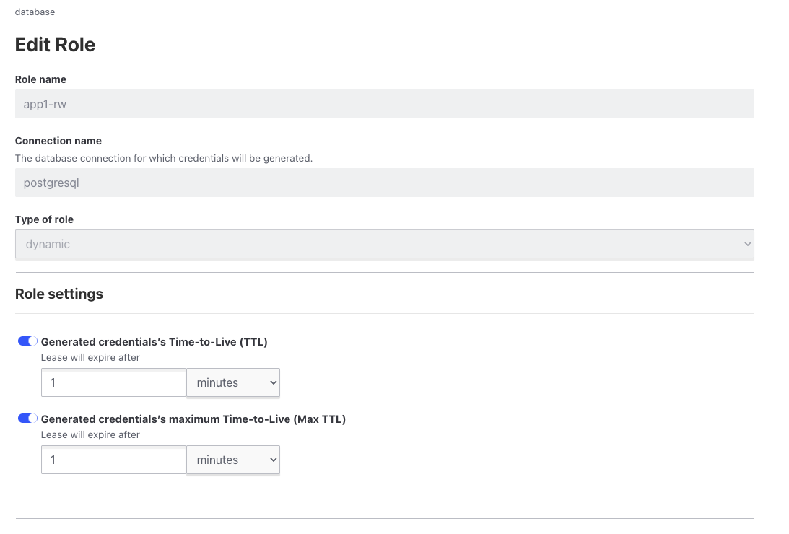
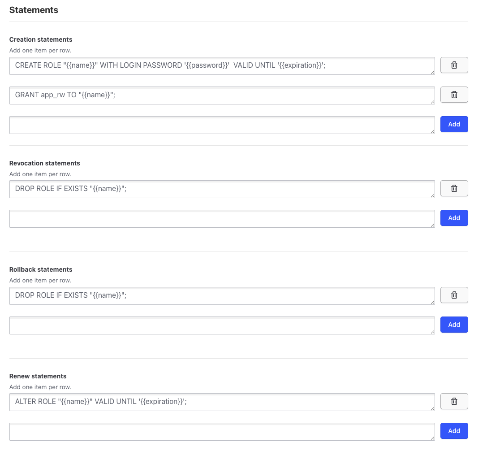
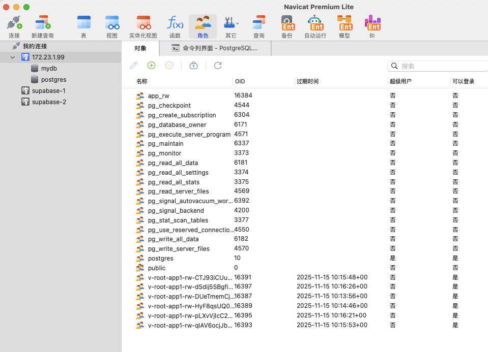

The idea
The usual pattern for application database access is a long-lived account with a password stored somewhere — a ConfigMap, a Secret, a config file, or worst of all hard-coded. That password is shared by every replica, it never rotates on its own, and revoking it means coordinating a change across everything that uses it.
Vault's database secrets engine inverts this. Instead of handing out one password that lives forever, Vault creates a brand-new database role with a unique password every time an application asks for credentials, and then drops it when its time to live runs out:
app + vault client --> vault server --> DB (create temp user + password)
app (uses that temp user) --> DBThe application never sees a static credential. Each instance gets its own identity at the database level, the lease expires on its own, and revoking access means revoking a lease rather than rotating a shared secret. If a credential leaks, the damage is bounded by its TTL.
1. Create the database connection
The connection tells Vault how to reach PostgreSQL and which account to use when
creating other users. That account needs the CREATEROLE privilege, since
Vault will be issuing CREATE ROLE statements.
Open Secrets Engines → database → Create connection and fill in the plugin, connection URL, and the admin credentials Vault should use:

The connection URL follows the standard libpq format:
postgresql://{{username}}:{{password}}@<db-host>:15432/postgres?sslmode=disable
The {{username}} and {{password}} placeholders are filled
from separate fields in the form; they are not part of the DSN you type literally.
Leave sslmode=disable only for a trusted network — over anything
else, use require or verify-full.
Checking Connection will be verified makes Vault test the connection immediately, which is worth doing: it turns a permissions problem into an error at configuration time instead of a failure the first time an app asks for credentials.
2. Create the role
A role is a template for what gets created. The role name is what applications
request — here app1-rw — and the type is
dynamic, meaning every request produces a fresh database user.

The two TTL settings control the lifecycle:
- Time-to-Live — how long a credential is valid before Vault revokes it. This is the number that bounds your exposure.
- Max Time-to-Live — the ceiling on renewal. A client can extend its lease past the TTL, but never beyond this.
The screenshot shows both set to 1 minute, which is a test configuration. It is actually a good way to start, because a minute is short enough to watch the whole create-and-revoke cycle while you are wiring things up. Raise it to something like 1–24 hours once you have confirmed the flow works, and remember that the application needs to handle the credential expiring underneath it.
3. The SQL statements
This is where the role's behavior is actually defined. Vault substitutes
{{name}}, {{password}}, and {{expiration}}
into the statements you provide.

Four statement types, each used at a different point in the lease lifecycle:
| Statement | When it runs |
|---|---|
| Creation | When a client requests credentials |
| Revocation | When the lease ends, is revoked, or Vault shuts down cleanly |
| Rollback | When creation fails partway through, to clean up |
| Renewal | When a client extends its lease |
A working set for a read/write role:
-- creation
CREATE ROLE "{{name}}" WITH LOGIN PASSWORD '{{password}}' VALID UNTIL '{{expiration}}';
GRANT app_rw TO "{{name}}";
-- revocation
DROP ROLE IF EXISTS "{{name}}";
-- rollback
DROP ROLE IF EXISTS "{{name}}";
-- renewal
ALTER ROLE "{{name}}" VALID UNTIL '{{expiration}}';A few details that matter:
-
Grant a role, not table privileges. The creation statement here
adds the new user to an existing
app_rwgroup role. Permissions are managed once onapp_rwand every dynamic user inherits them. IssuingGRANT SELECT ON ...per user means editing the Vault role every time your schema changes. -
VALID UNTILis a second layer of enforcement. Vault revokes the role at expiry, but the database itself also refuses the login after{{expiration}}. If Vault is unreachable, the credential still cannot be used indefinitely. - Rollback is not optional. If a creation statement fails after the role was made but before the grant succeeded, the rollback statement is what removes the orphan. Leaving it empty accumulates stray roles over time.
-
Revocation must be idempotent.
DROP ROLE IF EXISTSrather than plainDROP ROLE— Vault may retry, and a failure here leaves credentials alive after their lease ended.
4. Test it
Generate credentials from the Vault CLI:
vault read database/creds/app1-rwKey Value
------ ------------------------------------------------
username v-root-app1-rw-pR07X8aIrBhyx2hylf6W-1763201934
password <generated-password>Note the shape of the username. It is not a fixed name with a rotating password — it is a unique name per lease, built from the role and a random suffix. That is what makes per-instance attribution possible in database logs, and it is why revoking one lease never affects another.
Minutes later, the same view in a database client shows the difference directly
— here through Navicat, where several v-root-app1-rw-* roles from
earlier test runs have appeared, each with its own expiry:

That is the payoff. Every app instance that asked for credentials has its own database role and its own expiry, and none of them shares a password with any other.
Moving to production
-
Never disable
VALID UNTIL. Dropping it from the creation statement makes credentials permanent, which defeats the entire design. -
Give the connection's admin account the minimum it needs. It
requires
CREATEROLEand enough privilege to grant the target group role. It does not need superuser, and using one makes Vault itself the biggest credential in the system. - Separate roles per access level. One role granting read/write, a second granting read-only, rather than a single role that everything uses. This is the part that actually reduces risk — a compromised reporting job cannot write.
- Plan for lease expiry in the application. The driver will lose its connection when the credential is revoked. Either renew the lease ahead of expiration, or re-read credentials and rebuild the connection pool. Ignoring this is the most common way a working Vault setup turns into an outage.
-
Watch the lease count. Every
vault readcreates a role. A client that re-requests credentials on every operation will flood the database with users; cache the credential for its lease duration instead. -
Mind connection limits. PostgreSQL has a
max_connectionsceiling. Dynamic users each hold their own sessions, so a pool per instance per lease multiplies quickly.